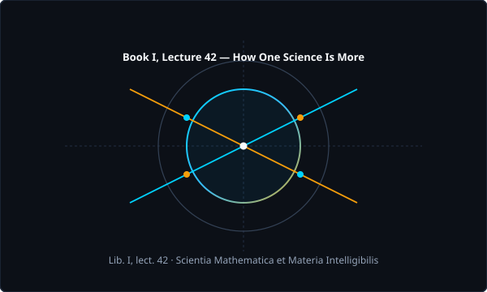

Physics Book II, Lecture 3 — How the Mathematician Differs from the Natural Philosopher and Why There Is No Falsehood in Those Who Abstract¶
In II Physicorum, Lectio 3 — Quomodo differat mathematicus a physico et quod abstrahentium non est mendacium

[lib. 2 l. 3 n. 1] After the Philosopher has shown what nature is and in how many ways it is spoken of, here he consequently intends to show what things natural science considers. And it is divided into two parts: in the first, he shows how the natural philosopher differs from the mathematician; in the second, he shows how far the consideration of natural science extends, at Since, however, nature, etc. Concerning the first he does three things: first, he raises the question; second, he sets forth arguments bearing on the question, at For indeed planes, etc.; third, he resolves the question, at Concerning these things, therefore, he treats, etc. He says first, therefore, that after it has been determined in how many ways nature is spoken of, one must consider wherein the mathematician differs from the natural philosopher.
[lib. 2 l. 3 n. 2] Then when he says, For indeed planes, etc., he sets forth arguments bearing on the question. The first of these is as follows. Whichever sciences consider the same subjects are either the same science, or one is a part of the other; now the mathematical philosopher considers points, lines, surfaces, and bodies, and similarly so does the natural philosopher (which he proves from the fact that natural bodies have planes, that is, surfaces, and solids, that is, three-dimensional solidities, and lengths and points; and it is necessary that the natural philosopher consider all things that belong to natural bodies); therefore it seems that natural science and mathematics are either the same, or one is a part of the other. The second argument he sets forth at Moreover, astronomy, etc. And concerning this argument he first raises the question whether astronomy is altogether other than natural philosophy, or is a part of it. For it is manifest that it is a part of mathematics: hence, if it is also a part of natural philosophy, it follows that mathematics and physics agree at least in this part. Now that astronomy is a part of physics he proves in two ways. First, indeed, by the following argument. To whomever it pertains to know the substances and natures of certain things, to him also it pertains to consider their accidents; now it pertains to the natural philosopher to consider the nature and substance of the sun and the moon, since they are certain natural bodies; therefore it pertains to him also to consider their per se accidents. He proves this as well from the custom of philosophers: for natural philosophers are found to have made determinations concerning the shape of the sun and the moon and the earth and the whole world, upon which the intention of astronomers also labors. Thus, therefore, astronomy and natural science agree not only in the same subjects, but also in the consideration of the same accidents and in the demonstration of the same conclusions. Hence it seems that astronomy is a part of physics; and consequently physics does not wholly differ from mathematics.
[lib. 2 l. 3 n. 3] Then when he says, Concerning these things, therefore, indeed, etc., he resolves the aforesaid question. And concerning this he does two things: first, he sets forth the solution; second, he confirms it, at Now this will surely become manifest, etc. Concerning the first he does three things: first, he resolves the question; second, he draws a certain corollary from what has been said, at Whence also he abstracts, etc.; third, he excludes an error, at Yet this escapes notice, etc.
[lib. 2 l. 3 n. 4] He says first, therefore, that the mathematician and the natural philosopher make determinations concerning the same things—namely points, lines, surfaces, and things of this sort—yet not in the same way. For the mathematician does not treat of them insofar as each of them is the boundary of a natural body, nor does he consider the things that belong to them insofar as they are boundaries of a natural body; yet that is the way in which natural science considers them. Nor is there any incongruity in the same thing falling under the consideration of diverse sciences according to diverse modes of consideration.
[lib. 2 l. 3 n. 5] Then when he says, Whence also he abstracts, etc., he draws a certain corollary from what has been said. For because the mathematician considers lines and points and surfaces and things of this sort, together with their accidents, not insofar as they are boundaries of a natural body, he is therefore said to abstract from sensible and natural matter. And the cause why he is able to abstract is this: because according to the intellect they are abstracted from motion. To make this cause evident, one must consider that many things are conjoined in reality without the one belonging to the understanding of the other: just as the white and the musical are conjoined in some subject, and yet the one does not belong to the understanding of the other, and therefore the one can be separately understood without the other. And this is for one object of understanding to be abstracted from another. Now it is manifest that posterior things do not belong to the understanding of prior things, whereas the converse holds: hence prior things can be understood without posterior things, and not conversely. Thus it is clear that animal is prior to man, and man is prior to this man (for man stands by addition to animal, and this man by addition to man); and on account of this, man does not belong to the understanding of animal, nor Socrates to the understanding of man: hence animal can be understood without man, and man without Socrates and other individuals. And this is to abstract the universal from the particular. In a similar way, among all the accidents that accrue to substance, quantity accrues to it first, and thereafter sensible qualities and actions and passions and the motions consequent upon sensible qualities. Thus, therefore, quantity does not enclose in its understanding sensible qualities or passions or motions; yet it does enclose substance in its understanding. Quantity can therefore be understood without matter subject to motion and sensible qualities, yet not without substance. And therefore quantities of this sort, and the things that belong to them, are according to the intellect abstracted from motion and from sensible matter, though not from intelligible matter, as is stated in Metaphysics VII. Because, therefore, they are thus abstracted from motion according to the intellect, inasmuch as they do not enclose in their understanding sensible matter subject to motion, the mathematician is able to abstract them from sensible matter. And it makes no difference with respect to the truth of the consideration whether they are considered in this way or in that. For although they are not abstract according to being, nevertheless mathematicians who abstract them according to the intellect commit no falsehood—for there is no falsehood in those who abstract—because they do not assert that they exist outside sensible matter (for this would be a falsehood), but consider them without any consideration of sensible matter, which can be done without falsehood: just as someone can consider whiteness without music, and truly so, even though they concur in the same subject; yet it would not be a true consideration if he were to assert that the white is not musical.
[lib. 2 l. 3 n. 6] Then when he says, Yet this escapes the notice of those who do this, etc., he excludes from what has been said the error of Plato. For because it escaped his notice how the intellect could truly abstract things that are not abstract according to being, he posited that all things that are abstract according to the intellect are abstract in reality. Hence he not only posited that mathematical entities are separate, on account of the fact that the mathematician abstracts from sensible matter, but he even posited that natural things themselves are separate, on account of the fact that natural science is concerned with universals and not with singulars. Hence he posited that man exists separately, and horse and stone and other things of this sort; and these separate realities he called Ideas—even though natural things are less abstract than mathematical ones. For mathematical entities are altogether abstracted from sensible matter according to the intellect, because sensible matter is not included in the understanding of mathematical entities, either in universal or in particular; whereas in the understanding of natural species sensible matter is indeed included, though not individual matter; for in the understanding of man flesh and bone are included, though not this flesh and this bone.
[lib. 2 l. 3 n. 7] Then when he says, Now this will surely become manifest, etc., he makes clear the solution set down in two ways: first, indeed, through the difference of the definitions assigned by the mathematician and the natural philosopher; second, through the intermediate sciences, at This is also demonstrated by the more natural, etc. He says first, therefore, that what has been stated concerning the diverse manner of consideration of the mathematician and the physicist will become manifest if anyone attempts to state the definitions of natural and mathematical entities and of their accidents: because mathematical entities, such as the even and the odd, the straight and the curved, and number and line and figure, are defined without motion and matter; whereas flesh and bone and man are not so defined, for the definition of these is like the definition of the snub, in whose definition a sensible subject is placed, namely the nose, and not like the definition of the curved, in whose definition no sensible subject is placed. And thus from the very definitions of natural and mathematical things there appears what was stated above concerning the difference between the mathematician and the natural philosopher.
[lib. 2 l. 3 n. 8] Then when he says, This is also demonstrated, etc., he proves the same thing through the sciences intermediate between mathematics and physics. Now those sciences are called sciences intermediate between mathematics and physics which take abstract principles from the purely mathematical sciences and apply them to sensible matter: just as optics applies to the visual line the things demonstrated by geometry concerning the abstract line; and harmonics, that is, music, applies to sounds the things that the arithmetician considers concerning the proportions of numbers; and astronomy applies the consideration of geometry and arithmetic to the heaven and its parts. Yet sciences of this sort, although they are intermediate between natural science and mathematics, are nevertheless said here by the Philosopher to be more natural than mathematical, because each thing is denominated and takes its species from its term: hence, because the consideration of these sciences terminates in natural matter, even though they proceed through mathematical principles, they are more natural than mathematical. He says, therefore, concerning sciences of this sort that they stand in a way contrary to the sciences that are purely mathematical, such as geometry or arithmetic. For geometry indeed considers the line that has being in sensible matter, which is the natural line; yet it does not consider it insofar as it exists in sensible matter, according as it is natural, but abstractly, as has been said. Optics, conversely, takes the abstract line according as it stands in the consideration of the mathematician, and applies it to sensible matter; and thus it treats of it not insofar as it is mathematical, but insofar as it is physical. From the very difference, therefore, of these intermediate sciences from the purely mathematical sciences, what was said above becomes clear. For if intermediate sciences of this sort apply abstract things to sensible matter, it is manifest that the mathematical sciences conversely abstract the things that exist in sensible matter.
[lib. 2 l. 3 n. 9] And through this the reply to the objection raised above concerning astronomy is also clear. Hence astronomy is more natural than mathematical. Thus it is no wonder if it shares in conclusions with natural science. Yet because it is not purely natural, it demonstrates the same conclusion through a different middle term. Thus, that the earth is spherical is demonstrated by the natural philosopher through a natural middle term, for instance because its parts from every side converge equally toward the center; whereas by the astronomer it is demonstrated from the shape of a lunar eclipse, or from the fact that the same stars are not beheld from every part of the earth.